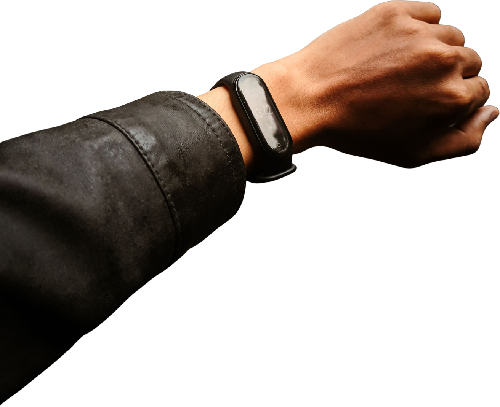

← Vitality
Vitals
your wearables
Connect a device and I turn its data into advice built around your goals.
·01
Devices
connected
WHOOP
recovery · sleep · strain
view your readings →
soon
Oura
sleep · readiness
soon
Apple Watch
heart · activity
soon
Fitbit
steps · sleep